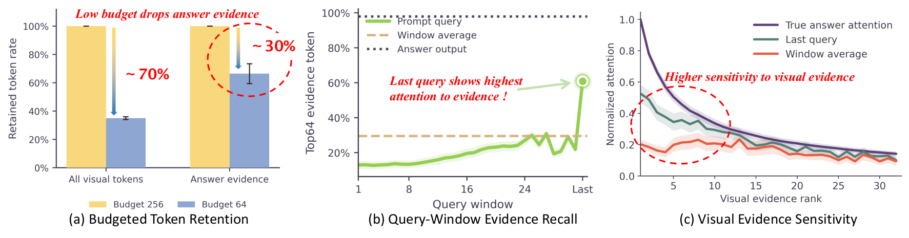
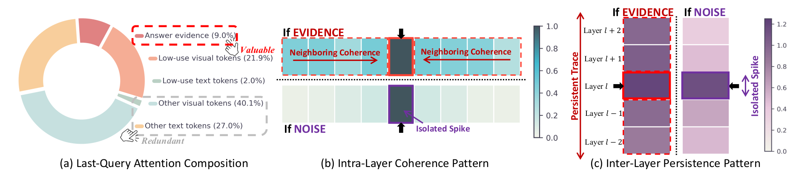
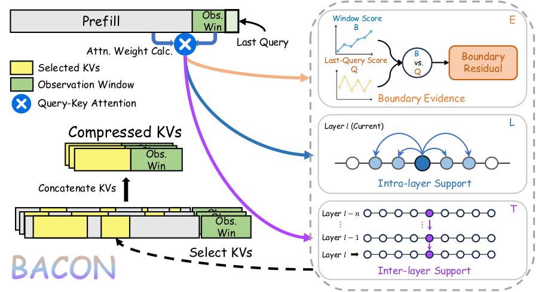

Multimodal Large Language Models (MLLMs) achieve strong vision-language reasoning, but long visual contexts enlarge the KV cache and increase decoding latency. Existing compression methods rely on observation-window attention for stable token-importance estimation, yet this aggregation can dilute sparse visual evidence and discard answer-critical tokens under aggressive compression. We identify last-query attention as a complementary source for recovering such evidence, but its answer-irrelevant signals can mislead retention.
We propose BACON, a plug-and-play method that calibrates observation-window attention with last-query evidence and suppresses isolated noise via intra-layer coherence and inter-layer persistence. Across diverse benchmarks, models, budgets, and compression methods, BACON improves multimodal KV compression by 7.5% on average under the most aggressive budget, with gains up to 30.9%.
Most attention-based KV cache compression methods rank cached tokens by an observation-window score — the average attention each cached token receives from the last few prompt queries. While this averaging stabilizes ranking, it can also obscure sparse but answer-critical visual evidence.

Observation-window aggregation can dilute sparse visual evidence; the last query recovers it. (a) Under aggressive compression, SparseMM discards answer-critical visual tokens. (b) The last prompt query is more sensitive than earlier queries to answer-relevant tokens. (c) Last-query attention better matches the answer's attention distribution over visual tokens than the window-averaged attention.

Why last-query attention needs calibration. (a) Only ~9% of last-query high-attention tokens are true evidence; ~70% are answer-irrelevant noise. (b) True evidence appears as a coherent local region; noise often appears as an isolated spike. (c) True evidence remains salient across adjacent layers, while noise is less consistent across layers.
The last query is not least for token retention: it reveals visual evidence missed by observation-window aggregation, but this evidence should be calibrated against the window signal before guiding token retention.

Overview of BACON. Boundary evidence is extracted from observation-window and last-query attention, calibrated with intra-layer coherence and inter-layer persistence, and combined into an evidence-aware score for head-wise KV cache compression.
average gain under the most aggressive budget
peak improvement
DocVQA, Qwen2-VL-7B, PyramidKV @ budget 64
DocVQA, Qwen3-VL-30B-A3B, PyramidKV @ budget 64
BACON only refines within-head token scores during prefill; the compressed cache size and the decoding procedure are unchanged. Accuracy gains come with negligible runtime and memory overhead over the original compression method.
Across image, video, GUI, and long-context text benchmarks — spanning 4 model families, 4 compression backbones, and 3 cache budgets — BACON consistently improves compressed inference. Click a tab to explore.
Δ over Base. Best result per column is in green bold. Full-KV upper bound: DocVQA 93.7, ChartQA 71.3, MMMU 49.9, TextCaps 1.473.
| Method | Variant | DocVQA | TextVQA | ChartQA | MMMU | TextCaps | ||||||||||
|---|---|---|---|---|---|---|---|---|---|---|---|---|---|---|---|---|
| 256 | 128 | 64 | 256 | 128 | 64 | 256 | 128 | 64 | 256 | 128 | 64 | 256 | 128 | 64 | ||
| SnapKV | Base | 88.6 | 82.1 | 70.1 | 80.6 | 77.0 | 70.3 | 70.0 | 69.6 | 66.2 | 49.9 | 49.8 | 49.6 | 1.361 | 1.141 | 0.787 |
| +MixKV | 91.8 | 83.9 | 70.9 | 82.6 | 81.0 | 73.5 | 70.0 | 70.2 | 67.2 | 49.9 | 49.9 | 49.7 | 1.470 | 1.332 | 0.919 | |
| +BACON | 93.1 +4.5 | 91.5 +9.4 | 85.5 +15.4 | 83.1 +2.5 | 82.6 +5.6 | 78.2 +7.9 | 70.2 +0.2 | 70.2 +0.6 | 69.6 +3.4 | 49.9 | 49.9 +0.1 | 50.0 +0.4 | 1.488 +0.13 | 1.426 +0.29 | 1.178 +0.39 | |
| PyramidKV | Base | 83.4 | 75.6 | 60.5 | 77.7 | 74.9 | 66.8 | 71.1 | 68.9 | 65.2 | 49.9 | 49.8 | 49.6 | 1.147 | 0.993 | 0.600 |
| +MixKV | 85.0 | 77.5 | 61.3 | 80.9 | 77.2 | 69.4 | 71.0 | 71.1 | 66.4 | 49.9 | 49.8 | 49.6 | 1.383 | 1.145 | 0.662 | |
| +BACON | 92.3 +8.9 | 89.3 +13.7 | 79.2 +18.7 | 82.5 +4.8 | 80.0 +5.1 | 75.1 +8.3 | 71.2 +0.1 | 70.6 +1.7 | 69.2 +4.0 | 49.9 | 49.9 +0.1 | 49.8 +0.2 | 1.461 +0.31 | 1.344 +0.35 | 1.073 +0.47 | |
| AdaKV | Base | 88.4 | 81.3 | 69.4 | 80.5 | 75.9 | 70.8 | 69.8 | 69.6 | 66.6 | 49.9 | 49.7 | 49.6 | 1.300 | 1.099 | 0.771 |
| +MixKV | 91.4 | 82.7 | 70.7 | 82.5 | 79.1 | 72.6 | 70.2 | 70.2 | 67.8 | 49.9 | 49.9 | 49.6 | 1.454 | 1.271 | 0.874 | |
| +BACON | 93.0 +4.6 | 91.1 +9.8 | 86.2 +16.8 | 82.8 +2.3 | 81.2 +5.3 | 78.5 +7.7 | 70.2 +0.4 | 70.2 +0.6 | 69.6 +3.0 | 49.9 | 49.8 +0.1 | 49.8 +0.2 | 1.473 +0.17 | 1.371 +0.27 | 1.144 +0.37 | |
| SparseMM | Base | 93.1 | 91.4 | 87.3 | 82.6 | 82.1 | 76.9 | 70.2 | 70.0 | 69.6 | 49.8 | 49.8 | 49.6 | 1.481 | 1.427 | 1.044 |
| +MixKV | 93.9 | 92.9 | 88.6 | 82.5 | 82.5 | 80.9 | 69.6 | 69.8 | 70.8 | 49.8 | 49.8 | 49.7 | 1.480 | 1.456 | 1.303 | |
| +BACON | 93.8 +0.7 | 93.2 +1.8 | 92.0 +4.7 | 82.6 | 82.4 +0.3 | 81.6 +4.7 | 70.6 +0.4 | 70.4 +0.4 | 70.2 +0.6 | 49.9 +0.1 | 49.8 | 49.8 +0.2 | 1.506 +0.03 | 1.511 +0.08 | 1.431 +0.39 | |
BACON generalizes from 7B MLLMs to InternVL3-8B and the 30B-scale MoE Qwen3-VL-30B-A3B.
| Model | Variant | DocVQA | TextVQA | ChartQA | MMMU | TextCaps |
|---|---|---|---|---|---|---|
| LLaVA-NeXT-Mistral-7B | Base | 43.8 | 55.7 | 38.6 | 34.7 | 0.436 |
| +MixKV | 45.6 | 57.8 | 39.1 | 34.7 | 0.505 | |
| +BACON | 52.4 +8.6 | 59.8 +4.1 | 39.9 +1.3 | 34.8 +0.1 | 0.505 +0.07 | |
| Qwen2-VL-7B | Base | 60.5 | 66.8 | 65.2 | 49.6 | 0.600 |
| +MixKV | 61.3 | 69.4 | 66.4 | 49.6 | 0.662 | |
| +BACON | 79.2 +18.7 | 75.1 +8.3 | 69.2 +4.0 | 49.8 +0.2 | 1.073 +0.47 | |
| InternVL3-8B | Base | 69.2 | 68.8 | 71.1 | 55.1 | 0.688 |
| +MixKV | 69.4 | 68.9 | 71.7 | 55.2 | 0.719 | |
| +BACON | 80.7 +11.5 | 74.4 +5.6 | 74.3 +3.2 | 55.3 +0.2 | 0.782 +0.09 | |
| Qwen3-VL-30B-A3B | Base | 74.4 | 73.2 | 68.5 | 51.78 | 0.266 |
| +MixKV | 76.3 | 77.2 | 71.8 | 52.11 | 0.370 | |
| +BACON | 87.2 +12.8 | 79.3 +6.1 | 73.2 +4.7 | 52.00 +0.22 | 0.387 +0.12 |
VATEX captioning (CIDEr / BLEU-4) and NextQA (WUPS). Best per column in green bold.
| Method | Variant | VATEX CIDEr | VATEX BLEU-4 | NextQA WUPS | ||||||
|---|---|---|---|---|---|---|---|---|---|---|
| 512 | 256 | 128 | 512 | 256 | 128 | 512 | 256 | 128 | ||
| SnapKV | Base | 48.14 | 46.51 | 46.27 | 21.22 | 20.60 | 20.26 | 25.97 | 25.69 | 25.84 |
| +MixKV | 48.55 | 47.68 | 45.95 | 21.34 | 20.82 | 20.32 | 25.99 | 25.93 | 25.60 | |
| +BACON | 48.67 | 48.02 | 46.02 | 21.38 | 21.26 | 20.38 | 26.15 | 25.94 | 26.02 | |
| AdaKV | Base | 48.20 | 46.20 | 45.37 | 21.55 | 20.43 | 20.28 | 25.72 | 25.70 | 25.65 |
| +MixKV | 48.68 | 47.46 | 45.39 | 21.22 | 20.78 | 20.34 | 25.99 | 26.01 | 25.86 | |
| +BACON | 48.82 | 47.85 | 45.33 | 21.55 | 21.24 | 20.54 | 25.96 | 25.95 | 25.86 | |
| PyramidKV | Base | 46.09 | 46.03 | 44.36 | 20.58 | 20.29 | 19.26 | 25.88 | 25.69 | 25.63 |
| +MixKV | 46.13 | 45.67 | 44.50 | 20.48 | 20.29 | 19.55 | 25.87 | 25.72 | 25.52 | |
| +BACON | 46.57 | 46.22 | 45.70 | 20.81 | 20.25 | 19.70 | 26.04 | 25.80 | 25.65 | |
| SparseMM | Base | 47.91 | 47.16 | 46.12 | 20.79 | 20.24 | 19.77 | 26.37 | 25.94 | 25.71 |
| +MixKV | 48.65 | 47.44 | 45.99 | 20.99 | 20.54 | 19.82 | 26.13 | 25.98 | 25.83 | |
| +BACON | 48.90 | 47.57 | 46.38 | 21.28 | 20.81 | 20.03 | 26.33 | 26.17 | 26.07 | |
Average accuracy across mobile / desktop / web text and icon subsets.
| Method | Variant | Mobile Text | Mobile Icon | Desktop Text | Desktop Icon | Web Text | Web Icon | Average | |||||||
|---|---|---|---|---|---|---|---|---|---|---|---|---|---|---|---|
| 128 | 64 | 128 | 64 | 128 | 64 | 128 | 64 | 128 | 64 | 128 | 64 | 128 | 64 | ||
| SnapKV | Base | 24.5 | 15.4 | 10.5 | 4.8 | 19.1 | 9.3 | 4.3 | 4.3 | 5.7 | 6.5 | 6.8 | 5.8 | 11.8 | 7.7 |
| +MixKV | 24.9 | 15.8 | 10.8 | 4.8 | 19.6 | 10.8 | 4.3 | 4.3 | 6.1 | 6.5 | 6.8 | 6.3 | 12.1 | 8.1 | |
| +BACON | 24.9 | 15.8 | 10.7 | 5.7 | 21.1 | 13.7 | 4.3 | 5.7 | 7.0 | 6.4 | 8.2 | 6.3 | 12.7 | 9.0 | |
| AdaKV | Base | 26.1 | 15.4 | 11.8 | 4.2 | 19.1 | 11.3 | 5.7 | 5.0 | 4.8 | 6.5 | 6.3 | 5.8 | 12.3 | 8.0 |
| +MixKV | 26.6 | 14.6 | 11.3 | 4.8 | 20.1 | 11.3 | 5.7 | 5.0 | 5.7 | 5.7 | 6.3 | 6.3 | 12.6 | 8.0 | |
| +BACON | 26.6 | 15.4 | 12.0 | 5.0 | 19.5 | 13.9 | 5.7 | 5.0 | 5.7 | 6.7 | 6.8 | 6.3 | 12.7 | 8.7 | |
| PyramidKV | Base | 24.5 | 13.9 | 8.2 | 6.6 | 20.1 | 9.8 | 3.6 | 5.0 | 6.1 | 6.1 | 6.2 | 5.3 | 11.5 | 7.8 |
| +MixKV | 24.5 | 13.2 | 8.7 | 7.0 | 19.1 | 10.3 | 3.6 | 5.0 | 6.5 | 6.1 | 6.6 | 5.8 | 11.5 | 7.9 | |
| +BACON | 24.8 | 13.5 | 8.9 | 6.7 | 20.1 | 10.3 | 4.3 | 5.7 | 7.8 | 6.2 | 6.3 | 5.8 | 12.0 | 8.0 | |
| SparseMM | Base | 22.7 | 15.8 | 9.2 | 4.4 | 18.6 | 9.8 | 4.6 | 4.3 | 7.0 | 4.5 | 8.7 | 5.8 | 11.9 | 7.4 |
| +MixKV | 21.5 | 14.6 | 10.2 | 4.4 | 17.0 | 10.3 | 2.9 | 4.3 | 7.4 | 3.9 | 8.2 | 5.8 | 11.2 | 7.2 | |
| +BACON | 22.7 | 16.9 | 10.2 | 4.5 | 19.6 | 10.3 | 4.9 | 5.0 | 7.6 | 5.2 | 8.3 | 8.2 | 12.2 | 8.4 | |
Category averages and overall average; Full-KV reference 41.76.
| Budget | Method | Single-Doc QA | Multi-Doc QA | Summarization | Few-shot | Synthetic | Code | Avg. |
|---|---|---|---|---|---|---|---|---|
| 1024 | SnapKV (Base) | 34.38 | 28.22 | 25.21 | 64.94 | 45.23 | 46.11 | 40.06 |
| +MixKV | 34.41 | 28.22 | 25.34 | 66.17 | 44.53 | 46.30 | 40.25 | |
| +BACON | 35.49 +1.11 | 28.56 +0.34 | 25.69 +0.48 | 67.00 +2.06 | 45.29 +0.06 | 46.44 +0.33 | 40.85 +0.79 | |
| AdaKV (Base) | 34.94 | 28.94 | 25.10 | 65.74 | 45.52 | 46.47 | 40.51 | |
| +MixKV | 35.11 | 28.84 | 25.47 | 66.21 | 44.92 | 46.40 | 40.60 | |
| +BACON | 35.67 +0.73 | 29.33 +0.39 | 25.71 +0.61 | 66.94 +1.20 | 45.63 +0.11 | 46.79 +0.32 | 41.11 +0.60 | |
| PyramidKV (Base) | 33.52 | 28.13 | 24.87 | 65.20 | 44.70 | 45.95 | 39.78 | |
| +MixKV | 33.90 | 28.41 | 25.58 | 66.21 | 43.59 | 45.80 | 40.07 | |
| +BACON | 34.85 +1.33 | 28.92 +0.79 | 26.02 +1.15 | 66.71 +1.51 | 44.75 +0.05 | 46.43 +0.48 | 40.74 +0.96 | |
| 512 | SnapKV (Base) | 33.25 | 26.82 | 23.65 | 64.48 | 45.15 | 45.41 | 39.11 |
| +MixKV | 33.08 | 27.12 | 24.40 | 65.19 | 45.15 | 45.61 | 39.43 | |
| +BACON | 34.06 +0.81 | 27.50 +0.68 | 24.54 +0.89 | 66.09 +1.61 | 45.32 +0.17 | 45.91 +0.50 | 39.94 +0.83 | |
| AdaKV (Base) | 33.33 | 27.23 | 23.80 | 64.70 | 45.31 | 45.86 | 39.35 | |
| +MixKV | 33.52 | 27.48 | 24.27 | 65.30 | 45.06 | 46.15 | 39.63 | |
| +BACON | 34.06 +0.73 | 27.54 +0.31 | 24.60 +0.80 | 66.55 +1.85 | 45.39 +0.08 | 45.89 +0.03 | 40.05 +0.70 | |
| PyramidKV (Base) | 31.92 | 26.95 | 23.39 | 64.26 | 44.58 | 44.45 | 38.60 | |
| +MixKV | 32.09 | 26.69 | 23.89 | 64.88 | 44.80 | 44.80 | 38.86 | |
| +BACON | 32.83 +0.91 | 27.62 +0.67 | 23.96 +0.57 | 65.97 +1.71 | 45.07 +0.49 | 45.14 +0.69 | 39.47 +0.87 |
Category averages were computed from the per-task numbers in the paper; the final column matches the table average.
@article{chen2026bacon,
title = {Last But Not Least: Boundary Attention Calibration for Multimodal KV Cache Compression},
author = {Chen, Tianhao and Wu, Yuheng and Yao, Kelu and Xu, Xiaogang and Hu, Xiaobin and Lee, Dongman},
year = {2026},
eprint = {2606.14782},
archivePrefix = {arXiv}
}